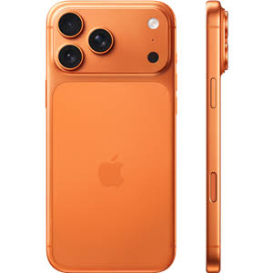

بزرگترین و هیجانانگیزترین ارتقای آیفون ۱۷، بدونشک نمایشگر آن است. اپل بالاخره کوتاه آمد و نرخ نوسازی ۱۲۰ هرتز را به مدل پایه آورد؛ همان تغییری که منتقدان و کاربران سالها انتظارش را میکشیدند و اپل را بهخاطر محدودکردنش به مدلهای پرو، سرزنش میکردند.
داخل فیلم اطلاعاتی راجب به آیفون داده است